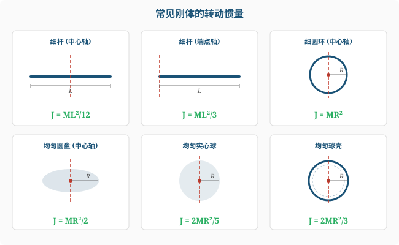
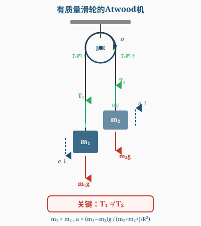
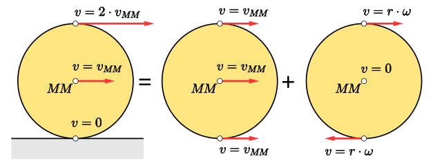

离散：$J = \sum m_i r_i^2$ 连续：$J = \int r^2\dd m$
其中 $r$ 是质量元到转轴的距离。
| 刚体 | 转轴 | 转动惯量 |
|---|---|---|
| 细棒（长$L$，质量$M$） | 过中心，垂直 | $\frac{1}{12}ML^2$ |
| 细棒 | 过端点，垂直 | $\frac{1}{3}ML^2$ |
| 圆环/薄壁圆筒（$R$） | 中心轴 | $MR^2$ |
| 圆盘/实心圆柱（$R$） | 中心轴 | $\frac{1}{2}MR^2$ |
| 实心球（$R$） | 直径 | $\frac{2}{5}MR^2$ |
| 球壳（$R$） | 直径 | $\frac{2}{3}MR^2$ |

$J_C$ 为过质心的轴的转动惯量，$d$ 为两平行轴间距。
合力矩 = 转动惯量 × 角加速度（类比 $F=ma$）
力矩 $M = Fr\sin\theta = F\cdot d$（$d$ 为力臂）
对 $m_1$：$m_1g - T_1 = m_1a$
对 $m_2$：$T_2 - m_2g = m_2a$
对滑轮：$(T_1-T_2)R = J\alpha = J\frac{a}{R}$
联立：$a = \frac{(m_1-m_2)g}{m_1+m_2+J/R^2}$

刚体角动量：$L = J\omega$
角动量守恒（合力矩为零时）：$J_1\omega_1 = J_2\omega_2$
转动动能：$E_k = \frac{1}{2}J\omega^2$
力矩做功：$W = \int M\dd\theta$
功能定理：$W = \Delta(\frac{1}{2}J\omega^2)$
$v_C = R\omega$（质心平动速度=半径×角速度）
总动能 = 平动 + 转动：$E_k = \frac{1}{2}Mv_C^2 + \frac{1}{2}J\omega^2$

$Mgh = \frac{1}{2}Mv^2 + \frac{1}{2}\cdot\frac{2}{5}MR^2\cdot\frac{v^2}{R^2} = \frac{1}{2}Mv^2(1+\frac{2}{5}) = \frac{7}{10}Mv^2$
$$v = \sqrt{\frac{10gh}{7}}$$（比纯滑动 $\sqrt{2gh}$ 小——部分能量转化为转动动能）
$J=\int r^2\dd m$，其中 $r$ 是质量微元到转轴的距离。
关键：根据物体形状选择合适的微元。
面密度 $\sigma=M/(\pi R^2)$。取同心圆环微元（半径 $r$，宽 $\dd r$）：
$$\dd m=\sigma\cdot2\pi r\dd r$$ $$J=\int_0^R r^2\cdot\sigma\cdot2\pi r\dd r=\frac{2M}{R^2}\int_0^R r^3\dd r=\frac{2M}{R^2}\cdot\frac{R^4}{4}=\frac{1}{2}MR^2$$将球分割为垂直于轴的薄圆盘。距中心 $z$ 处盘半径 $r=\sqrt{R^2-z^2}$，厚 $\dd z$。
每个薄盘的转动惯量 $\dd J=\frac{1}{2}\dd m\cdot r^2$。
$\dd m=\rho\pi r^2\dd z=\rho\pi(R^2-z^2)\dd z$
$$J=\int_{-R}^{R}\frac{1}{2}\rho\pi(R^2-z^2)^2\dd z=\frac{2}{5}MR^2$$对于涉及滑轮/绕绳/滚动的问题，通常需要联立：
有质量滑轮的Atwood机需要3个方程（两个物体+滑轮转动方程）。
用功能定理：重力做功 = 转动动能增量
重心下降 $h=\frac{L}{2}\sin\theta$：
$$Mg\frac{L}{2}\sin\theta=\frac{1}{2}J\omega^2=\frac{1}{2}\cdot\frac{ML^2}{3}\cdot\omega^2$$ $$\omega=\sqrt{\frac{3g\sin\theta}{L}}$$在 $\theta=0$（水平）：$\alpha_0=3g/(2L)$，杆端加速度 $a=L\alpha_0=3g/2>g$！
快速旋转的陀螺绕竖直轴缓慢转动的现象称为进动。
进动角速度：$\Omega=\frac{Mgl}{J\omega}$
其中 $M$ 为陀螺质量，$l$ 为质心到支点距离，$J$ 为绕自转轴转动惯量，$\omega$ 为自转角速度。
自转越快 → 进动越慢。
对斜面物体：$T-mg\sin\theta=ma$（沿斜面向上为正）
等等——重新判断运动方向。若 $m$ 下滑（$mg\sin\theta>T$）：
对 $m$：$mg\sin\theta-T=ma$
对圆柱：$TR=J\alpha=\frac{1}{2}MR^2\cdot\frac{a}{R}$，$T=\frac{1}{2}Ma$
代入：$mg\sin\theta-\frac{1}{2}Ma=ma$
$$a=\frac{mg\sin\theta}{m+M/2},\quad T=\frac{Mmg\sin\theta}{2m+M}$$跳上前系统总角动量（对转台轴）：$L=mv_0R$
跳上后：$L=(J_0+mR^2)\omega$
角动量守恒：$\omega=\frac{mv_0R}{J_0+mR^2}$
刚体做一般运动（平动+转动）时，总动能为：
$$E_k = \frac{1}{2}Mv_C^2 + \frac{1}{2}J_C\omega^2$$其中 $v_C$ 为质心速度，$J_C$ 为绕过质心轴的转动惯量。
功能定理：外力做功（包括重力、摩擦力等）= 系统总动能的增量
$$W_{外} = \Delta E_k = \frac{1}{2}Mv_C^2 + \frac{1}{2}J_C\omega^2 - \frac{1}{2}Mv_{C0}^2 - \frac{1}{2}J_C\omega_0^2$$纯滚动情形：
纯滚动条件：$v_C = R\omega$，圆柱转动惯量 $J_C = \frac{1}{2}MR^2$。
静摩擦力不做功（纯滚动接触点瞬时速度为零），只有重力做功：
$$Mgh = \frac{1}{2}Mv^2 + \frac{1}{2}\cdot\frac{1}{2}MR^2\cdot\frac{v^2}{R^2} = \frac{1}{2}Mv^2 + \frac{1}{4}Mv^2 = \frac{3}{4}Mv^2$$ $$\boxed{v = \sqrt{\frac{4gh}{3}} \approx 1.155\sqrt{gh}}$$纯滑动情形（无摩擦斜面）：
圆柱不转动，全部势能转化为平动动能：
$$Mgh = \frac{1}{2}Mv^2 \implies v = \sqrt{2gh} \approx 1.414\sqrt{gh}$$对比：纯滑动的底部速度更大，因为纯滚动时部分势能转化为转动动能。
杆绕端点的转动惯量：$J = \frac{1}{3}ML^2$
从水平到竖直，质心下降高度 $h = \frac{L}{2}$。
由功能定理（只有重力做功，铰链力力矩为零）：
$$Mg\frac{L}{2} = \frac{1}{2}J\omega^2 = \frac{1}{2}\cdot\frac{ML^2}{3}\cdot\omega^2 = \frac{ML^2\omega^2}{6}$$ $$\omega = \sqrt{\frac{3g}{L}}$$自由端速度（端点做圆周运动，半径为 $L$）：
$$v_{端} = L\omega = L\sqrt{\frac{3g}{L}} = \sqrt{3gL}$$注意 $v_{端} = \sqrt{3gL} > \sqrt{2gL}$（自由落体从同高度 $L$ 落下的速度），这是因为杆的质心下降 $L/2$ 释放的势能全部集中在端点的动能上。
对于薄板（质量分布在一个平面内的刚体），取薄板所在平面内两条互相垂直的轴 $x$ 和 $y$，以及垂直于薄板的轴 $z$（三轴交于一点），则：
$$\boxed{J_z = J_x + J_y}$$注意：此定理只适用于薄板！不能用于三维物体（球体、圆柱体等）。
取圆盘所在平面内两条互相垂直的直径为 $x$ 轴和 $y$ 轴，$z$ 轴垂直于盘面过圆心。
由对称性：$J_x = J_y$（绕任何直径的转动惯量都相等）。
由垂直轴定理：
$$J_z = J_x + J_y = 2J_x$$ $$J_x = \frac{J_z}{2} = \frac{1}{2}\cdot\frac{1}{2}MR^2 = \boxed{\frac{1}{4}MR^2}$$这是一个非常优雅的推导——无需做任何积分！
先求绕过中心且平行于一边的轴的转动惯量。将薄板看作许多平行细棒，每根绕中心的转动惯量为 $\frac{1}{12}(\dd m)a^2$，积分后：
$$J_x = \frac{1}{12}Ma^2$$由对称性 $J_y = J_x = \frac{1}{12}Ma^2$。
由垂直轴定理：$J_z = J_x + J_y = \frac{1}{6}Ma^2$。
当系统所受合外力矩为零时，系统的总角动量守恒：
$$L_{初} = L_{末} \implies J_1\omega_1 = J_2\omega_2$$常见情形：内力改变了转动惯量（人收缩手臂、转盘对接等），但无外力矩。
角动量守恒（对转盘中心轴，外力矩为零）：
初态：子弹对轴的角动量 $L_0 = mv_0R$，转盘静止。
末态：子弹嵌入边缘后，系统转动惯量为
$$J_{末} = J_{盘} + mR^2 = \frac{1}{2}MR^2 + mR^2 = \left(\frac{M}{2}+m\right)R^2$$角动量守恒：$mv_0R = J_{末}\omega$
$$\boxed{\omega = \frac{mv_0}{(\frac{M}{2}+m)R} = \frac{2mv_0}{(M+2m)R}}$$动能损失：
初动能：$E_{k0} = \frac{1}{2}mv_0^2$
末动能：$E_{k} = \frac{1}{2}J_{末}\omega^2 = \frac{1}{2}\left(\frac{M}{2}+m\right)R^2\cdot\frac{4m^2v_0^2}{(M+2m)^2R^2} = \frac{m^2v_0^2}{M+2m}$
动能损失：
$$\Delta E_k = \frac{1}{2}mv_0^2 - \frac{m^2v_0^2}{M+2m} = \frac{1}{2}mv_0^2\cdot\frac{M}{M+2m} = \frac{Mmv_0^2}{2(M+2m)}$$这是一个完全非弹性碰撞，部分动能转化为热能和形变能。
角动量守恒（对接过程中摩擦力为内力矩，无外力矩）：
$$J_1\omega_1 + J_2\omega_2 = (J_1+J_2)\omega$$ $$\boxed{\omega = \frac{J_1\omega_1+J_2\omega_2}{J_1+J_2}}$$能量损失：
$$\Delta E = E_{k,初} - E_{k,末} = \frac{1}{2}J_1\omega_1^2 + \frac{1}{2}J_2\omega_2^2 - \frac{1}{2}(J_1+J_2)\omega^2$$代入 $\omega$ 化简后：
$$\boxed{\Delta E = \frac{J_1J_2}{2(J_1+J_2)}(\omega_1-\omega_2)^2}$$$\Delta E \geq 0$，等号当且仅当 $\omega_1 = \omega_2$ 时成立。
能量损失转化为摩擦热。这个公式的结构类似于一维完全非弹性碰撞的动能损失公式 $\Delta E_k = \frac{m_1m_2}{2(m_1+m_2)}(v_1-v_2)^2$。